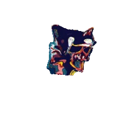
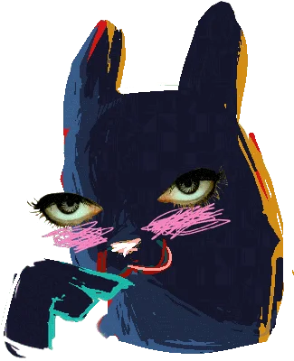

Hacked by donkos haters. WE WILL TAKE OVER THE INTERNET!!

FREE* dating advice from SOFANTH IEL
YEAH!!!!!!!!!! super pro date advice

FROM THE SCUG THEMSELF: I have had 2947399 cycles worth of dating and rizz experienced and as thus i am incredibly qualified to give dating adviced to any who ask. therefore you should defo trust me to give rizz advice i can get any girl or boy i want w my awesomesauce epic sigma skibidi pickup lines and so you should definitely give me all ur moneuy for dating advice i rizzed up 5 slugcats i have a harem of 8847 slugcats give money i m poor plzzzz i need money to proposr to my so of 5 years plssss pls pslssssssssss. ok wahtever. just call me and gvie me 5 doller and i will give 100% REAL NO FAKE NO GLUE NO BORAX 1000% effective dating slash life adivced and every girl ever will fall for you i guarantee NO REFUNDS BTwwwww nO REFUND NONE AT ALL ZERO REFUNDS. oj well so today i saw a cool babe and used my epic charisma rizzing skills ands she fell for me SO HARD oimmggg you wouldnt believe how hard shes in love with me. it was so crazy. crazy? i was crazy once. they locked me in a room. a rubber room. with rats. and rats make me crazy. crazy? i was crazy once. they locked me in a room. a rubber room. with rats. and rats make me crazy. crazy? i was crazy once. they locked me in a room. a rubber room. with rats. and rats make me crazy. crazy? i was crazy once. they locked me in a room. a rubber room. with rats. and rats make me crazy.crazy? i was crazy once. they locked me in a room. a rubber room. with rats. and rats make me crazy. crazy? i was crazy once. they locked me in a room. a rubber room. with rats. and rats make me crazy. crazy? i was crazy once. they locked me in a room. a rubber room. with rats. and rats make me crazy.crazy? i was crazy once. they locked me in a room. a rubber room. with rats. and rats make me crazy.crazy? i was crazy once. they locked me in a room. a rubber room. with rats. and rats make me crazy. crazy? im crazy in love w my pookie wookie Saint hahahahahahaa. i have such epic rizz skills that i pulled saint TRUST ME I GIVE EPIC SIGMA DATING ADVICE OWOOWOWOWOWOWO OWO UWU Why do they call it oven when you of in the cold food of out hot eat the food? AAAAHHHHH AHHH i need to marru sait b u t im too poor to buy a ring sad emoji I NEED MONEYS PLEZZZZZ ;-; So ur with ur honey and yur making out wen the phone rigns. U anser it n the vioce is "wut r u doing wit my daughter?" U tell ur girl n she say "my dad is ded". THEN WHO WAS PHONE? Has anyone really been far even as decided to use even go want to do look more like? IDK IDK IDK what do i say just CALL ME i give advice yea yea. e Due to my strong personal convictions (Due to my strong personal convictions) I wish to stress (I wish to stress) That this website (that this website) In no way endorses (in no way endorses) A belief in the occult (a belief in the occult) Before the events of Rain World, there existed a people commonly referred to as the Ancients. Within their society, there existed monks who sought to escape the cycle of death and rebirth that trapped every living creature. These monks believed that there existed five natural urges, which bound every living creature to this cycle, and that if they shed each one, they could cross themselves out for good. The Ancients were immersed in all things sentimental, as well as those cerebral. They created art in the form of poetry, song, and craft, and likely interested themselves in discussions, debates, and documenting their living qualia. There were likely many strata of influence an Ancient could find themselves in, and there existed an intricate system of titles and honorifics that was present in their official communications. This was a society that proved to be spiritual, artistic, and ambitious to a fault. lOL they kinda sound dumb thank god i wasnt alive back when THEYYYY were L LL L L L L L LLLLL From the Void Fluid Revolution came the Iterators: massive, freestanding computers imbued with great processing power. They played many roles in the upkeep of Ancient society, but one of their purposes was to discover a solution to ascension. This solution needed to apply to all living creatures, and provide them with a way to leave the cycle of death and rebirth; however, this problem appears to remain unsolved by the events of Rain World. The water consumption of the Iterators is immense, and the exhaust of this water as vapor is equally great, so as more Iterators were constructed, the surface of the world was transformed by the rain they made. The surface became uninhabitable, so the Ancients moved their cities and settlements on top of their Iterators’ structures. As technology grew, the collection of Void Fluid likely did as well. Prices of Void Fluid baths had started becoming cheaper, and populations had likely started to decrease. thanks wiki the iterators still suck. tho. fuck u five pebbles ur pebbsi cola is shit and your catboy outfit looks horrible i hate u u fevi pebbles i hate the void sea also ermmm wawaawawaawwawawaawwa I feel so unsure As I take your hand and lead you to the dance floor As the music dies, something in your eyes Calls to mind a silver screenAnd all its sad good-byes I'm never gonna dance again Guilty feet have got no rhythm Though it's easy to pretend I know you're not a fool I should've known better than to cheat a friend And waste the chance that I'd been given So I'm never gonna dance again The way I danced with you, oh Time can never mend The careless whispers of a good friend To the heart and mind Ignorance is kind There's no comfort in the truth Pain is all you'll find I'm never gonna dance again Guilty feet have got no rhythm Though it's easy to pretend I know you're not a fool I should've known better than to cheat a friend (should've known better, yeah) And waste the chance that I'd been given So I'm never gonna dance again The way I danced with you, oh Never without your love Tonight the music seems so loud I wish that we could lose this crowd Maybe it's better this way We'd hurt each other with the things we'd want to say GOOD SONG GOO D SONG it fits me i love singing it whever i see a hot BABE BUY MY STUFF OR I WILL FIND U . OK BY3E BYE
DONKOSHATERS.ORG DONKOSHATERS.ORG DONKOSHATERS.ORG